第１編 総則↑Top
第４章 物（権利の客体）↑Top
第１節 物－総説↑Top
民法上の「物」とは有体物をいう（85条）。
有体物とは、空間の一部を占める外界の物質すべてをいう（固体・液体・気体）。
もっとも、以下に示すように、有体物がすべて民法にいう「物」というわけではない。権利の客体としてふさわしいことが必要である。
①有体性
②支配可能性
大気、海面、月、太陽などは除かれる。
③非人格性
第２節 不動産と動産↑Top
1. 定義
：土地及びその定着物（86条１項）
2. 種類
(1) 土地
(2) 土地の定着物
(a) 定着物
：土地に固定されており、取引通念上継続的に固定されて使用されるもの
ex. 樹木や石垣、機械もそれが土地又は建物に据え付けられたときには定着物となる。
定着物は原則として土地の一部をなし、土地所有権に含まれるが、以下の２つの例外がある。
(b) 建物
建物は、常に独立の不動産とされている（370条参照）。
建築中の物が、いつ独立の不動産としての建物となるかにつき、判例（大判昭10.10.１）は、木材を組み立てて屋根をふいただけでは建物といえないが、独立に風雨をしのげる程度、すなわち、屋根瓦がふかれ周壁として荒壁がぬられた程度に達すれば、床や天井が未完成でも「建物」といえるとする。
(c) 立木
立木法による登記をした立木は、土地とは独立の不動産とされ、また、明認方法をすることにより独立の物として扱われる。
1. 定義
動産：不動産以外の物（86条２項）
2. 金銭
金銭も形式的には動産にあたるが、支払手段としての価値表象物であるから、動産というよりも価値そのものであり、動産に適用される多くの規定（178条、192条等）が適用されない（192条につき、最判昭39.１.24）。
３ 動産と不動産の区別
1. 両者を区別する趣旨
①歴史的に不動産の方が動産より重要な財産とされて、異なった規律に服してきた。
②動く動かないという自然の性質の差異に基づき、扱いが技術的に異ならざるを得ない。
2. 具体的差異
①公示方法の差異（177条、178条）
②公信の原則の有無（192条）
③その上に成立する権利の差異（369条等）
④経済的価値の差異からくる取扱いの差異（13条１項３号、864条）
⑤無主物の取扱い（239条）
⑥相隣関係（209条以下）の有無
第３節 主物と従物↑Top
従物：独立の物でありながら、客観的・経済的には他の物に従属して、その効用を助ける物（87条１項）
主物：従物を付属させる対象となる物
ex. 刀に対して鞘は従物。レストランの建物を主物とすると、営業用のテーブル・イスは従物。
従物は、主物の処分に従う（87条２項）。
物が独立性を有している場合、その処分も独立になされるのが原則であるが、２個の物の間に客観的・経済的な主従結合関係があるとき、これを法律的運命においても同一に取扱い、その結合を破壊しないように要請される場合が多い。かかる要請に応じて設けられたのが、87条２項である。
1. 継続的に主物の効用を助けること
2. 主物に付属すると認められる程度の場所的関係にあること
3. 主物と同一の所有者に属すること
4. 独立の物であること
一方が他方の構成部分となり、又は、合して単一の物として認められるだけになるときは、従物について別異の物としての地位を認めることはできない。
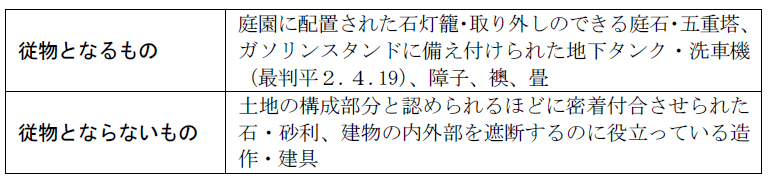
従物は主物の処分に従う（87条２項）。ただし、本条は任意規定である。
従たる権利についても87条２項を類推する。
ex. 借地上の建物にとって、借地権は従たる権利である（最判昭40.５.４）。
第４節 元物と果実↑Top
1. 元物：果実を生ずる物
2. 果実：物より生じる経済的収益
(1) 天然果実：物の経済的用途に従って有機的あるいは無機的に産出される物（88条１項）
ex. 牛乳、鉱物
(2) 法定果実：物の使用の対価として受ける金銭その他の物（88条２項）
ex. 家賃、利息
1. 天然果実
それが元物から分離するときに、収取する権利を持っている者に帰属する（89条１項）。
2. 法定果実
収取権の存続期間を日割計算して帰属させる（89条２項）。
第５章 法律行為↑Top
第１節 法律行為の意義↑Top
：意思表示を要素とする私法上の法律要件
意思表示とは、当事者が法律効果を欲し、かつ、そのことを発表する行為をいう。
法律要件とは、権利・義務を発生させる一定の社会関係をいう。
私権（権利・義務）は一定の事実を原因として変動（発生、変更、消滅）する。
1. 意義
：法律要件を構成する個々の要素
この法律事実の中で、最も重要なものが意思表示である。
2. 法律事実の種類
(1) 容態（人の精神作用に基づく事実）
(a) 外部的容態（行為）：意思表示、準法律行為など
(b) 内部的容態：「善意」（32条１項、94条２項など）、「制限する旨の意思表示」（474条４項）
(2) 事件（人の精神作用に基づかないもの）
(a) 事件：人の生死、時の経過など、人の精神作用と関係のないもの
(b) 事実行為：物を破壊し、果実を分離するというような、人の行為でなくとも同一の効果を生ずる行為

1. 意義
：意思的要素を伴って法律効果を発生させる行為であるが、効果意思を伴わないもの
すなわち、意思表示を要素としない点で法律行為と異なる。
2. 種類
(1) 狭義の準法律行為
一定の意識内容を表現するもの
(a) 意思の通知
意思の発表であり、法はこれに対して一定の効果を付与するが、意思が法律効果の発生を内容としない。
ex. 催告（20条等）、受領の拒絶（493条等）
(b) 観念の通知
一定の事実の通知であって、意思の発表という要素を含まないもの
ex. 代理権授与の表示（109条１項）
(2) 非表現行為
ex. 先占（239条１項）、遺失物拾得（240条）、事務管理（697条）
3. 効果
狭義の準法律行為に対しては、意思表示・法律行為に関する規定が類推適用され得る。
なぜなら、狭義の準法律行為は、当事者の意思や感情の表現に対して法が一定の効果を付与するものであり、特定の意識内容の表現であって、また、当事者は通常法定の効果を予期してこれを行うものであるので、この点で法律行為・意思表示に類似しているからである。
1. 意思表示の態様による分類
(1) 契約
：複数当事者の関与によって彼らが相互に拘束されるという効果を発生させる法律行為
ex. 売買（555条）
(2) 単独行為
：一方の者の１個の意思表示だけで成立することのできる法律行為
ex. 取消し（123条）、解除（540条）、遺言（960条以下）
(3) 合同行為
：相対立しない複数当事者の内容と方向を同じくする複数の意思表示が合致することによって成立する法律行為
ex. 社団設立行為
※ 「法律行為」として説明されている部分のほとんどは「契約」に置き換えて理解してさしつかえない。
2. 有償行為・無償行為
有償行為：財産の出捐を目的とする行為のうち、対価のあるもの
ex. 売買（555条）、交換（586条）、賃貸借（601条）、請負（632条）
無償行為：財産の出捐を目的とする行為であるが、対価のないもの
ex. 贈与（549条）、使用貸借（593条）
3. 要式行為・不要式行為
意思表示が一定の形式を伴うか否かで区別される
要式行為：その法律行為を組成する要素たる意思表示が、一定の方式、例え
ば書面の作成を要するもの
不要式行為：要式行為以外のもの
4. 生前行為・死後行為
死後行為（死因行為）：行為者の死亡によって効果の発生するもの
生前行為：死後行為以外のもの
第２節 法律行為の解釈↑Top
①法律行為の意味を明らかにすること（狭義の法律行為の解釈）
②法律行為の内容の補充ないし修正をすること（補充的・修正的解釈）
1. 狭義の法律行為の解釈
①当事者の付与した共通の意味（主観的意味）を確定する。
②共通の主観的意味を確定し得ない場合、表示の客観的意味を確定する。
当事者の用いた表示手段（言動・動作など）が、当該事情の下において、慣習や条理に従って判断した場合、相手方又は一般社会によってどのように理解されるかを標準とする。
2. 補充的・修正的解釈
(1) 慣習
任意規定と異なった慣習がある場合において、法律行為の当事者が、その慣習による意思を有するものと認められるときは、法律行為はその慣習に従って解釈される（92条）。
(2) 任意規定
：公の秩序に関しない規定
当事者が任意法規と異なった意思を表示した場合（91条）でない限り、法律行為の解釈の標準となる。
(3) 条理（信義則）
条理は制定法、判例法、慣習法などの礎えとなっているものであるから、法律行為の補充的、修正的解釈の標準となる。
第３節 法律行為の要件↑Top
1. 原則
法律行為は、当事者が法律行為を組成する意思表示をなすことによって成立する。
契約の場合、両当事者の意思表示（申込みと承諾）が機能的に合致して初めて成立する。
2. 要式行為・要物契約
要式行為（手形行為など）や要物契約（質権設定契約など）では、さらに、方式や目的物の交付を必要とする。
1. 内容の確定性
当事者の目的、慣習、任意規定、条理によって補充してもなお不確定な法律行為に対しては、法は助力を拒まざるを得ない。
2. 内容の実現可能性
内容の実現不可能な法律行為は、法的効果を帰属させても無意味であるから、無効とされる。
3. 内容の適法性－強行法規違反
(1) 適法性と強行法規
法律行為が有効に成立するためにはその内容が法律の精神に適ったものでなければならない。従って、法律行為が強行法規に反する場合は無効となる（91条の反対解釈）。
(2) 取締法規等との関係
取締法規とは経済政策や行政目的から、一定の行為を禁止又は制限する規定である。一方、強行法規は「公の秩序」維持を目的とするものであるから、取締法規とは目的の次元・観点を基本的に異にしている。もっとも、近時は取締規定に違反する契約自体を総合的に判断して契約が無効になるか否かを判断しようとする立場が有力である。
(3) 脱法行為
脱法行為とは強行法規が禁止する法律効果をその法規には抵触しない他の法律行為によって実現することである。実質的には強行法規違反であり、無効となる。
4. 契約内容の社会的妥当性・公序良俗違反（90条）
(1) 公序良俗の意義
：国家社会の一般的利益秩序（公の秩序）と社会一般の道徳的観念（善良の風俗）を併せたもの
公の秩序又は善良の風俗に反する法律行為は、無効とする（90条）。
(2) 公序良俗違反の態様
人倫に反するもの、正義の観念に反するもの、暴利行為、基本的人権を侵害する行為、射倖的行為等
例えば、他人の行った法律行為の効果が本人に帰属するためには、行為者が本人に対する関係で代理権を有することが必要である（後述、「代理」参照）。また、自己又は他人の物に対してなされた処分行為の効果がその物ないし他人に及ぶためには、処分者がその物について処分権を有することが必要である。
1. 法定条件
：有効に成立した法律行為がその本来の効果を生ずるために、法が特に一定の要件を要求する場合
ex. 遺言者より後まで受遺者が生きていること（994条１項）
2. 条件・期限
：当事者の意思によって法律行為の効力の発生・消滅ないしその時期を左右するもの
第６章 意思表示↑Top
第１節 総説↑Top
Ⅰ 意思表示
意思表示：当事者が法律効果を欲し、かつ、そのことを表示する行為
意思表示を細かく分析すると、動機・（内心的）効果意思・表示意思・表示行為に分けられる。
例えば、ある土地（甲地とする）を買う場合、以下の過程を辿る。
| 「甲土地上に家を建てたい」 | 動機 |
| 「甲土地を買おう」 | 効果意思 |
| 「それを手紙で伝えよう」 | 表示意思 |
| 「甲土地を売ってください」という手紙を出す | 表示行為 |
これらの過程に問題があるのが「意思の欠缺」や「瑕疵ある意思表示」の話である（後述）。
Ⅱ 意思表示の到達と受領
1. 原則－到達主義（97条１項）
意思表示は、その通知が相手方に到達した時からその効力を生ずる（97条1項）。「到達」したといえるためには、意思表示が相手方の勢力圏内に入れば足り、相手方が了知することは必要ではない（最判昭36.４.20）。
2. 例外－発信主義
制限行為能力者に対する相手方の催告への確答（20条）
表意者が発信した後に死亡したり、意思能力を喪失したり、制限行為能力者となっても、意思表示はそのまま効力がある（97条３項）。
発信後の死亡・能力喪失は意思表示とは無関係な事実だからである。
また、相手方が正当な理由なく意思表示の通知が到達することを妨げたときは、その通知は、通常到達すべきであった時に到達したものとみなされる（97条２項）。
相手方を知ることができず、又は所在不明の場合には、公示による意思表示が認められる（98条１項）。
公示による意思表示は、最後に官報に掲載した日又はその掲載に代わる掲示を始めた日から2週間を経過した時に、相手方に到達したものとみなす（98条３項）。
ただし、表意者が相手方を知らないこと又はその所在を知らないことにつき過失があったときは、到達の効力を生じない（98条３項ただし書）。
意思表示が到達により効力を生じるためには、受領者に受領能力が必要である。
そこで、意思表示の相手方がその意思表示を受けたときに意思能力を有しなかったとき又は未成年者若しくは成年被後見人であったときは、その意思表示をもってその相手方に対抗することができない（98条の２本文）。対抗の問題であるから、受領者側から到達を主張することは妨げられない。
ただし、①相手方の法定代理人②意思能力を回復し、又は行為能力者となった相手方がその意思表示を知った後は、この限りでない(98条の2ただし書)。
第２節 意思表示と表示主義↑Top
1. 意思表示と表示主義の考え方
法律行為において、（内心的）効果意思と表示行為とが一致していない場合に、どちらを重視して判断するか？
※ 効果意思と表示行為が一致していない：本人の意思表示に欠缺（意思と表示の不一致）や瑕疵（欠陥）があった場合

2. 民法の態度
意思表示のそもそもの出発点は個人の意思の尊重、私的自治の原則にあるが、取引の安全も重視する必要がある。そこで、民法は、意思主義、表示主義の両者を採用している（折衷主義）。
(1) 意思の欠缺

(2) 瑕疵ある意思表示

第３節 意思の欠缺↑Top
Ⅰ 心裡留保（93条）
：表意者（表示行為をした者）が、そのなした表示行為に対応する真意のないことを知りながらする単独の意思表示
ex.売る気もないのに「このパソコンを10万円で売ってやる」という場合
1. 表示行為の存すること
ただし、当事者の真意を問題とすべき身分上の法律行為は除く。
2. 表示上の効果意思と内心的効果意思が符合しないこと
3. 表意者がそのことを知っていること
1. 原則－有効（表示主義）
意思表示は、表意者がその真意ではないことを知ってしたときであっても、そのためにその効力を妨げられない（93条１項本文）。
2. 例外－無効（意思主義）
その表示を受けた者が、表意者の内心的意思について悪意又は有過失の場合（真実の内心的意思を知っていたか、又は、一般人の注意をもってすればその内心的意思を知ることができた場合）には、無効となる（93条１項ただし書）。
3. 善意の第三者保護規定（93条２項）
93条１項ただし書の無効は善意の第三者に対抗できるか。
Ｑ 甲が、贈与の意思もないのに壺を乙に贈与する旨の意思表示をしたところ、乙がこれを自分の物として丙に売り渡した。甲の心裡留保について、乙が悪意、丙が善意であった場合、甲は、丙に贈与の無効を主張できるか。
→ 無効は「善意の第三者」に対抗することができない（93条２項）。
「対抗することができない」とは、善意の第三者からは、無効を主張することも有効を主張することも許されるが、善意の第三者に対して無効を主張することは、当事者のみならず他の第三者も許されないということである。本条項は、第三者保護のための規定であるからである。
Ⅱ （通謀）虚偽表示（94条）
：相手方と通じてした虚偽の意思表示
ex. Ａが債権者からの差押えを免れる目的で、Ｂに土地を売却したような状況を作出した場合
心裡留保との違いは、相手方との通謀の有無である。
1. 意思表示の存すること
2. 表示上の効果意思と内心的効果意思が符合しないこと
3. 表意者が自分でそのことを知っていること
4. 真意と異なる意思表示をすることについて相手方と通謀すること
1. 原則－無効（94条１項）
2. 例外
無効は「善意の第三者」に対抗することができない（同条２項）。
「対抗することができない」とは、善意の第三者からは、無効を主張することも有効を主張することも許されるが、善意の第三者に対して無効を主張することは、当事者のみならず他の第三者も許されないということである。本条項は、第三者保護のための規定であるからである。
(1) 趣旨
(a) 意思表示の外形を信じて取引関係に入った者を保護する必要がある。
(b) 虚偽の意思表示をして真実を伴わない外形を作り出した者が、その権利を失う結果になってもやむを得ない（保護に値しない）。
(2) 「第三者」の範囲
(a) 意義
本条項にいう「第三者」とは、当事者及びその包括承継人以外の者で、虚偽表示に基づいて新たにその当事者から独立した利益を有する法律関係に入ったために、虚偽表示の有効・無効について法律上の利害関係を有するに至った者をいう。
ⅰ 「第三者」に当たる例
①不動産の仮装譲受人からの譲受人（最判昭28.10.１）
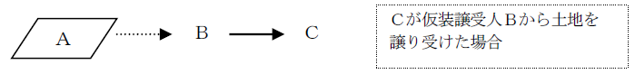
②不動産の仮装譲受人から抵当権の設定を受けた者（大判大４.12.17）
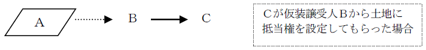
③原抵当権が仮装であることにつき善意で転抵当権の設定を受けた者（最判昭55.９.11）
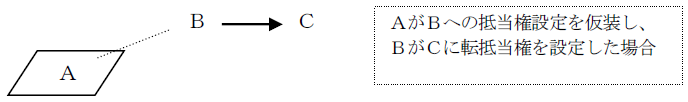
④虚偽表示の目的物を差し押えた仮装譲受人の債権者（最判昭48.６.28）
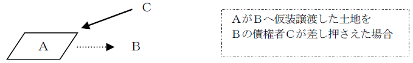
⑤仮装債権の譲受人（大判昭13.12.17）
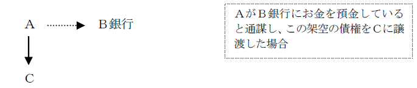
ⅱ 「第三者」に当たらない例
①債権の仮装譲受人から取立てのために債権を譲り受けた者（大決大９.10.18）
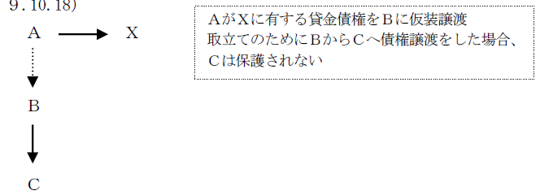
②仮装売買から生じる債務者の登記請求権を、それと直接関係のない債権に基づいて代位行使する債権者（大判昭18.12.22）
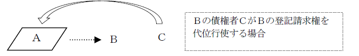
③土地の賃借人が借地上の建物を仮装譲渡した場合の土地賃貸人（最判昭38.11.28）
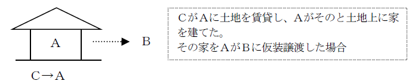
④土地の仮装譲受人からその土地上の建物を賃借した者（最判昭57.６.８）

⑤仮装譲受人の単なる債権者〔「第三者」に当たる例④との違いに注意〕
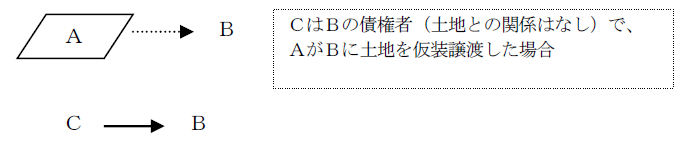
⑥１番抵当権が仮装放棄され、順位上昇を誤信した２番抵当権者
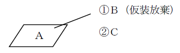
⑦代理人や法人の理事が虚偽表示した場合の本人や法人（大判大３.３.16〔法人に関する〕、大判昭16.８.30〔代理人に関する〕）
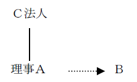
(b) 「第三者」には転得者も含まれるか。
Ｑ 悪意の第三者から譲り受けた善意者は「第三者」に含まれるか。
→ 含まれる（最判昭45.７.24・通説）。
（理由）
①転得者も虚偽表示を含む一連の法律行為に基づいて新たな法律関係に入ったといえる。
②外観信頼の点で直接の第三者とかわりがない。
③本人の帰責の点も何ら異ならない。
(c) 善意の第三者からの転得者は悪意でも保護されるか。
失踪宣告で扱った「絶対的構成・相対的構成」と同一の問題である。
Ａ 絶対的構成説（大判昭６.10.24・通説）
悪意の転得者も保護される。
ただし、善意の第三者を傀儡として介在させたにすぎない場合は権利濫用として保護されない。
（理由）
①取引の安全のために法律関係の早期安定を図る必要がある。
②虚偽表示者は、善意の第三者に渡った時点で一時はあきらめており、酷ではない。
Ｂ 相対的構成説
「第三者」か否かは、その者ごとに相対的に判断する。すなわち、善意の第三者が出現しても、転得者が悪意であれば保護されない。
（批判）
善意の第三者が契約不適合責任（565条）を負うのは、94条２項の保護の趣旨を没却する。
(3) 「善意」
(a) 判断時期
第三者が法律上利害関係を有するに至った時
(b) 無過失の要否
第三者は「善意」で足り、無過失までは要求されない（大判昭12.８.10・通説）。
(4) 第三者は対抗要件を具備することを要するか。
～「第三者」としての客観的要件の問題
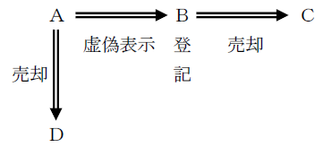
(a) Ａ－Ｃ間の対抗要件としての登記の要否
→ 不要（最判昭44.５.27）
Ｃは、Ｂに対してはもちろん、Ａに対しても登記なくして自分が権利取得者であることを主張できる。
（理由）
Ａ・Ｃ間は対抗関係（177条）にはない。
(b) 第三者（Ｃ）vs. 真の権利者からの譲受人（Ｄ）
Ａ 177条説（最判昭42.10.31・通説）
Ｃ・Ｄ間は対抗関係に立ち、先に登記を備えた者が優先する。
（理由）
94条２項は、Ａとの関係で第三者を保護する規定であって、それ以外の者との関係では、原則どおり177条によって優劣を決すべきである。
Ｂ 94条２項説（有力説）
Ｃは登記なくしてＤに対して権利を主張することができる。
（理由）
①Ｄに対する関係では、Ａ→Ｂ→Ｃの譲渡は有効であり、Ｂに登記がある以上、ＤはＢに対抗できず、その承継人たるＣはＤに優先する。
②Ｃを優先させることが94条２項の趣旨に合致する。
③登記をもたない者（Ａ）から譲り受けたＤよりも、登記をもつ者（Ｂ）から譲り受けたＣの方が保護に値する。
1. 権利外観法理
：権利は不存在であるが、外観上それが存在しているかのようにみえる場合に、その存在を信じて取引関係に立った者はその信頼において保護されるべきであり、自ら虚偽の外観を作出した者は権利を失ってもやむを得ないとする法理
94条２項は権利外観法理の現れと見られるために、本来の虚偽表示の事案以外でも、権利外観法理を適用すべきだと考えられる場面では、同条を類推適用して取引の安全を図る考え方が、判例・学説上展開されている。
2. 要件
抽象的には、以下の３つに要約できる。
(1) 虚偽の外観の存在
「意思表示」に基づくものではなくとも権利者らしい外観が存在すること
(2) 権利者の帰責性（意思的関与）
「通謀」はなくとも外観作出につき真の権利者に帰責事由があること
(3) 第三者の正当な信頼
その外観を第三者が正当に信頼したこと
Ｑ 第三者の信頼の要件としてどの程度を要求するか。
→ 真実の権利者の帰責性に応じて利益衡量による。
帰責性が大きければ、保護要件は軽く（善意で足りる）、帰責性が小さければ、保護要件を重くする（無過失まで要求）。
3. 虚偽の外形作出の類型と判例
(1) 意思外形対応型（真実の権利者の意思と第三者の信頼の基礎となった外形が一致している場合）
(a) 外形自己作出型（真実の権利者が自ら外観を作出した場合）
① Ａが建物を新築したが、新築にあたりＢ名義で資金を借り入れていた関係からＢ名義で保存登記をしたところ、ＢがＣに当該建物を売却してしまった、というケースで、94条２項の類推適用を肯定し善意のＣを保護した（最判昭41.３.18）。
② 不動産を買い受けたＡが、Ｂにその所有権を移転する意思がないにもかかわらず前主からＢ名義への所有権移転登記を経由したところ、Ｂが当該不動産をＣに売却してしまった、というケースにつき同旨（最判昭29.８.20）。
③ Ｂを代理人として不動産を買い受けたＡが、Ｂにその所有権を移転する意思がないにもかかわらず、契約書上買主名義がＢになっていたことからＢに所有権移転登記を受けさせたところ、Ｂが当該不動産をＣに売却してしまった、というケースにつき同旨（最判昭37.９.14）。
④ ＡはＢより不動産を譲り受けたが、所有権移転登記を経由せずにＢから抵当権の設定を受けた旨の登記をしていたところ、Ｂが当該不動産をＣに譲渡してしまったというケースで、善意無過失のＣを保護した（最判昭45.11.19）。
(b) 外形他人作出型（外観は他人によって作出されたものだが、後に真実の権利者が明示又は黙示の承認をした場合）
① 未登記建物の所有者Ａが、Ｂにその名義で登記することを許容したところ、ＢがＣ名義で登記してしまい、Ａがそれを承認したというケースで、Ｃからの善意の譲受人Ｄを94条２項の類推適用により保護した（最判昭45.４.16）。
② 不動産所有者Ａが、Ｂがその不動産の登記名義を勝手に自己へ移転したのを知りながら、Ｂと結婚するなどの事情によりこれを放置し、その間にＢ名義で根抵当権設定登記がなされたというケースで、Ｂからの善意の譲受人Ｃにつき同旨（最判昭45.９.22）。
③ 未登記建物の所有者Ａが、その建物が誤って固定資産課税台帳に夫たるＢ名義で登記されたのを知りながら、Ｂ名義で固定資産税を納入していたところ、Ｂの債権者Ｃがその建物に強制執行してきたというケースにつき同旨（最判昭48.６.28）。
なお、この判決に対しては、固定資産課税台帳の記載のみで権利者らしい外観ありと言えるのか、Ｂ名義の登録の放置・Ｂ名義での納税が権利を失ってもやむを得ないといえるほどの帰責事由に当たるのか、という疑問が呈されている。
(2) 意思外形非対応型（真実の権利者の意思と第三者の信頼の基礎となった外形とが対応を欠く場合）
不動産所有者Ａが、Ｂの信用を外観上増大させる目的でその不動産につきＢ名義の仮登記を与えたところ、ＢがＡの印鑑を無断使用して本登記に改めＣに処分した、というケースにおいて、94条２項・110条の法意に照らして善意無過失のＣを保護した（最判昭43.10.17）。
※ 意思外形対応型に比し真の権利者側の帰責性が低いため、それとの相関から第三者側の主観的要件を加重した（無過失まで要求している）ものと解される。また、判例は、一般的に94条２項は善意のみを要求しているという立場であるため、第三者に無過失を要求する意思外形非対応型では、同条項のみならず110条（同条が適用されるには無過失まで必要とされる）をも援用したのではないかと思われる。
1. 動産取引に対する適用の有無
動産について94条２項は不要である。即時取得制度（192条）が存在し、不動産以上に取引の安全が保障されているからである。これを、占有に公信力がある、という。
2. 不動産についての公信力の有無
不動産については、登記に公信力はない。しかし、94条２項の類推適用により、公信力を認めたのと同じ機能を果たす。
ただし、本人の帰責性を要求する点で、動産についての192条とは異なる。
第４節 瑕疵ある意思表示↑Top
Ⅰ 錯誤（95条）
錯誤に基づく意思表示は、一定の場合に取り消すことができる（95条）。
錯誤とは、表示に対応する意思が欠缺し、しかも意思の欠缺につき表意者の認識が欠けていることをいう（意思の無意識的欠缺・通説）。
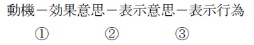
1. 表示行為の錯誤－意思表示に対応する意思を欠く錯誤（95条１項１号）
(1) 内容の錯誤（表示行為の意味に関する錯誤）
表示行為の意味を誤解している場合（②に錯誤がある場合）。
ex. ドルとポンドが同じ価値であると思い込んでいたために、「１万ポンドで売る」というところ、「１万ドルで売る」といってしまう場合。
(2) 表示上の錯誤
表示行為そのものに関する錯誤（③に錯誤がある場合）。
ex. 言い間違い、書き間違い。
2. 動機の錯誤－表意者が法律行為の基礎とした事情についてのその認識が真実に反する錯誤（95条１項２号）
(1) 意義
：意思表示そのものではなく、意思を形成する過程としての動機もしくは縁由の点に錯誤がある場合（上記①に錯誤がある場合）
ex. 道路が通って地価が上がるという噂を信じて、辺鄙な土地を高額で買い受ける場合。
(2) 95条の適用の有無
動機の錯誤（表意者が法律行為の基礎とした事情についてのその認識が真実に反する錯誤（95条１項２号））は、「その事情が法律行為の基礎とされていることが表示されていたときに限り」、取消しの対象となる（95条２項）。
3. 共通錯誤
(1) 意義
当事者の双方が共通の錯誤に陥っていた場合
ex．ある地区に地下鉄が通り駅ができると信じた甲が、その地区に住む乙に土地の売却を持ちかけ、乙は高額で土地を買い受けたが、実際はそんな計画はなく、甲乙とも錯誤に陥っていたような場合
(2) 95条の適用の有無
共通錯誤の場合には、表意者に重大な過失があったとしても錯誤取消しをすることができる（95条３項２号）。
1. 要件
(1) 以下の各要件を満たすこと
(a) 表示行為の錯誤の場合
① 意思表示に対応する意思を欠く錯誤に基づく意思表示があること（95条１項１号）
② その錯誤が法律行為の目的及び取引上の社会通念に照らして重要なものであること（95条１項柱書）
(b) 動機の錯誤の場合
① 表意者が法律行為の基礎とした事情についてのその認識が真実に反する錯誤に基づく意思表示があること（95条１項２号）
② その事情が法律行為の基礎とされていることが表示されていること（95条２項）
③ その錯誤が法律行為の目的及び取引上の社会通念に照らして重要なものであること（95条１項柱書）
(2) 表意者に重大な過失がないこと（95条３項）
(a) 原則
表意者に重大な過失がある場合には、原則として、錯誤に基づく意思表示の取消しを主張することができない（95条３項柱書）。
(b) 例外
しかし、①相手方が表意者に錯誤があることを知り、又は重大な過失によって知らなかったとき（95条３項１号）、②相手方が表意者と同一の錯誤に陥っていたとき（95条３項２号）には、表意者に重大な過失があったとしても、錯誤に基づく意思表示の取消しを主張することができる。
2. 効果
取消しが可能となる。取消しによって、法律行為は初めから無効となる（取消しの遡及効。121条）。
(1) 取消しの主張権者
取消権者（本人、代理人及び承継人。120条２項）のみが錯誤に基づく意思表示の取消しをすることができるのが原則である。
(2) 取消しの主張前の第三者の保護
錯誤に基づく意思表示の取消しは、善意でかつ過失がない第三者に対抗することができない（95条４項）。
1. 和解の確定効
和解が成立したとしても、何らかの理由で争いが蒸し返されてしまうと、和解の互譲による紛争解決機能を損ねてしまう。そこで、法は和解で定めた法律関係と、真実の法律関係とが異なる場合にも、当事者は、和解の内容に拘束される（確定効、696条）こととし、紛争の蒸し返しを防止している。
2. 錯誤の規定の適用
Ｑ 和解においても錯誤の規定が適用されるか。
→ 争いの目的とならなかった事項で和解の要素をなすものであれば適用される（最判昭43.７.９・通説）。
（理由）
錯誤が法律関係確定の合意のなされた事項自体に関するときは、それがたとえ真実と違っても、この点の法律関係を確定しようというのが和解契約の目的だから、和解契約の確定効（696条）からして、95条の適用は排除される。
Ⅱ 詐欺による意思表示（96条）
詐欺：欺くこと（欺罔）によって人を錯誤に陥れること
詐欺による意思表示：相手方又は第三者に欺かれて、錯誤に陥り、その錯誤によってなされる意思表示
詐欺による意思表示は、取り消すことができる（96条１項）。
1. 故意
①相手方を欺いて錯誤に陥れようとする意思と、②錯誤によって意思表示をさせようとする意思との二重の故意があること
2. 欺く行為（欺罔行為）
積極的な作為に限らず、沈黙も詐欺となり得る。
3. 表意者が欺く行為によって錯誤に陥り、その錯誤によって詐欺者が欲した意思表示をすること
4. 詐欺が違法性のあるものであること
社会生活上、多少の欺く行為は放任されるべきだから、違法性のあるものでなければ詐欺とはならない。
この点で、沈黙・意見の陳述などは詐欺とならないことが多いが、例えば、不動産の所有者が、抵当権が設定され登記されていることを秘して高価に売却した場合は詐欺となる（大判昭４.３.７）。
1. 原則－取消し可
(1) 通常の詐欺の場合
詐欺による意思表示は取り消すことができる（96条１項）。
表示に対する効果意思そのものは存在しており、その効果意思を形成する過程（動機の段階）に、他人の不当な干渉が加わるという欠陥（瑕疵という）があるにすぎないからである。
取消しによって、行為は初めから無効となる（取消しの遡及効、121条本文）。
(2) 第三者による詐欺の場合
第三者による詐欺の場合、相手方が詐欺の事実を知り、又は知ることができた場合のみ取り消すことができる（96条２項）。
2. 例外－第三者保護
取消しの効果は善意無過失の第三者に対抗することができない（96条３項）。
(1) 第三者の意義
善意無過失の第三者とは、詐欺の事実を知らないで、詐欺による法律行為に基づいて取得された権利関係について新たな利害関係に入った者で、詐欺の事実を知らないことに過失のない者をいう。
(a) 第三者はいつまでに利害関係に入ることを要するか。
→ 96条３項にいう第三者とは取消し前に利害関係を有するに至った者に限られる（大判昭17.９.30・通説）。
（理由）
同条項は取消しの遡及効を制限して取引の安全を図る趣旨であるから、取消しによって影響を受くべき者に限られると解すべきである。
(b) 取消し後の第三者の保護
★
本来、取消しによってＡＢ間の売買は遡及的に無効となり、ＢＣ間の売買は他人物売買であってＣは土地所有権を取得できないとも思える（561条参照）。また、この場合、Ｃは取消し後に利害関係に入った第三者であるから、96条３項で保護することはできない。
Ｑ では、Ｃは一切保護されないのか。
Ａ 177条説（大判昭17.９.30・通説）
ＡとＣは対抗関係に立ち、ＣはＡに先んじて登記を備えれば保護される。
（理由）
① 取消しによる遡及的無効という効果は、契約の効果を否定するための擬制にすぎず、現実には取消しまでは有効であり、取消しにより物権が復帰すると考えるべきである（上記の例でいえば、ＢからＡへの復帰的物権変動が生じ、これとＢからＣへの譲渡とが二重譲渡類似の関係に立つといえる）。
② いったん取り消した以上、迅速に登記を回復して権利変動を公示すべきであるので、これを怠った者が権利を失うのはやむを得ない。
（批判）
① 取消し前の第三者については遡及的無効が生ずることを前提にしながら、取消し後の第三者についてはこれを無視しているが、矛盾である。
② 悪意の第三者であっても登記を了しさえすれば保護されることになり不都合である（特に、取消し前の第三者が一切保護されない強迫の場合、取消し前の第三者は善意無過失であっても保護されないのに、取消し後の第三者は悪意であっても保護されることになる）。
Ｂ 94条２項類推適用説（有力説）
取消し一般につき取消し時を基準として、取消し後は94条２項類推適用により第三者を保護すべきであるとする。
（理由）
① 取消しの遡及効に適合的である（取消し前と後とで取消しの効果を同一に扱うことができる）。
② 第三者の善意・悪意、過失の有無を考慮したきめ細やかな調整が可能である。
（批判）
被欺罔者には、虚偽の外観を作出した者ほどの帰責性はなく、94条２項類推適用の基礎を欠く。
(2) 第三者の対抗要件の要否
Ａ 不要説（最判昭49.９.26）
（理由）
① 第三者との関係では詐欺による意思表示も完全に有効と扱われるから、被欺罔者と第三者は前主・後主の関係に立ち、対抗関係に立たない。
② 第三者は物権の取得者に限らない。
Ｂ 必要説
（理由）
① 第三者は、その取得した権利を誰に対しても主張することができるようにしておくべきである（公示制度の重視）。
② 第三者への不動産の譲渡時期が被欺罔者による取消しの前後を問わず、同様の扱いをすべきである。
Ｑ 動機の錯誤が95条にいう「錯誤」に当たると解する立場から、また、判例の立場によっても動機が表示されていた場合には、詐欺によって生じた錯誤が「要素の錯誤」に該当するときには詐欺取消しと錯誤取消しの両方の要件をみたすことになる。そのような場合、表意者は詐欺取消しと錯誤取消しとの選択的主張をすることができるのか。
→ 二重効肯定説（通説）
表意者はいずれかを選択して主張できる。
（理由）
詐欺取消しも錯誤取消しも、表意者保護のために法律行為（意思表示）の効力を否定する理論構成の一つにすぎない。
Ⅲ 強迫による意思表示（96条）
強迫：他人に害意を告知し、恐怖を感じさせる行為
強迫による意思表示：相手に畏怖を生じさせ、それによってなされる意思表示強迫による意思表示は、取り消すことができる（96条１項）。
1. 故意
①相手方に畏怖を生じさせようとする意思と、②畏怖によって意思表示をさせようとする意思との二重の故意があること
2. 強迫行為
相手方に畏怖を生じさせる行為であること
行為の態様には制限がなく、沈黙・不作為も強迫となり得る。
3. 表意者が強迫行為によって畏怖を生じ、その畏怖によって強迫者が欲した意思表示をすること
強迫の結果、完全に意思の自由を失った者の意思表示は当然に無効となる。
4. 強迫が違法性のあるものであること
強迫による意思表示は常に取り消すことができる（96条１項）。
第三者による強迫であっても取り消すことができる（96条２項の反対解釈）。
善意無過失の第三者に対しても対抗することができる（96条３項の反対解釈）。
※ 詐欺に比べて、表意者保護の要請が強いために、意思主義が徹底されている。
強度の強迫は意思が欠けることになるとして無効となる場合がある。
【まとめ】
| 心裡留保（93） | 虚偽表示（94） | 錯誤（95） | 詐欺（96） | 強迫（96） | |
| 原 則 | 有効 | 無効 | 有効 |
（取消し可）
| 例 外 | 無効（相手方が悪意又は有過失） | 善意の第三者に対抗不可 | 重大な過失がある場合取り消せない(例外の例外あり) | 第三者による詐欺の場合取消しに制限あり | 無効となる場合あり |
| 第三者保護の要件 | 善意 | 善意無過失 | × |